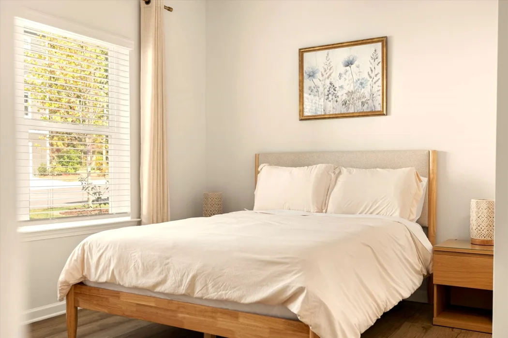
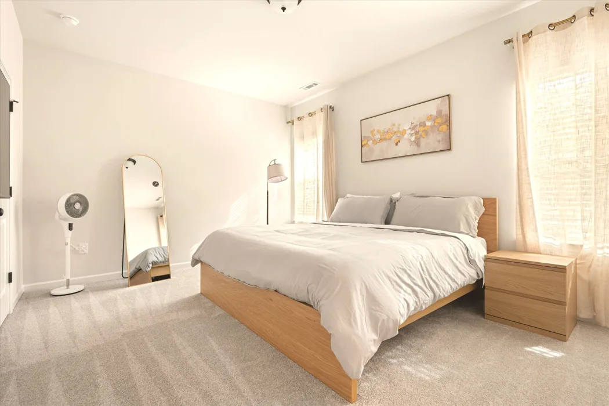
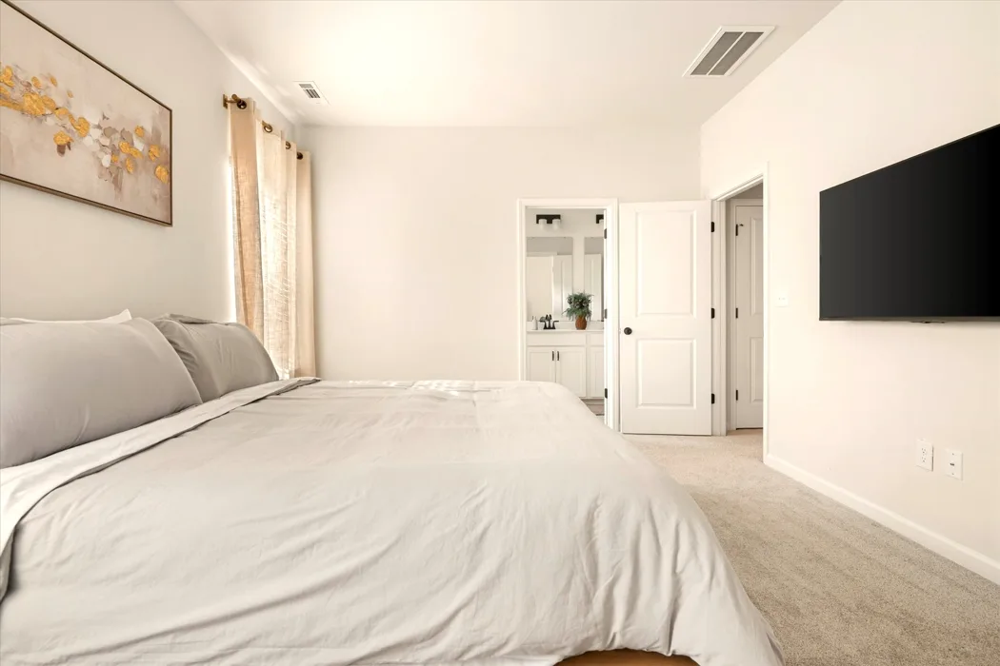
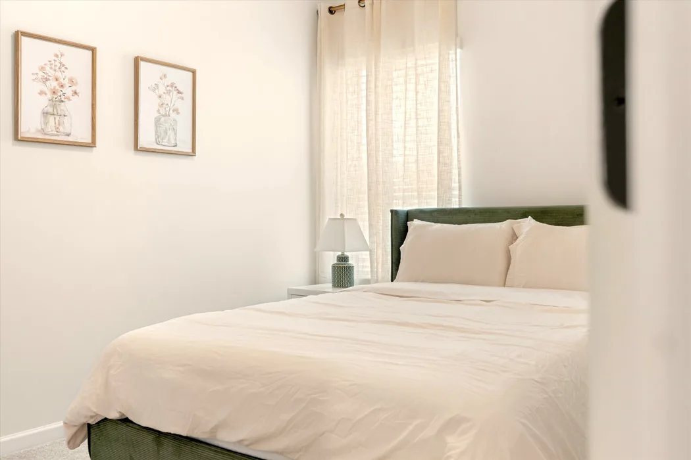
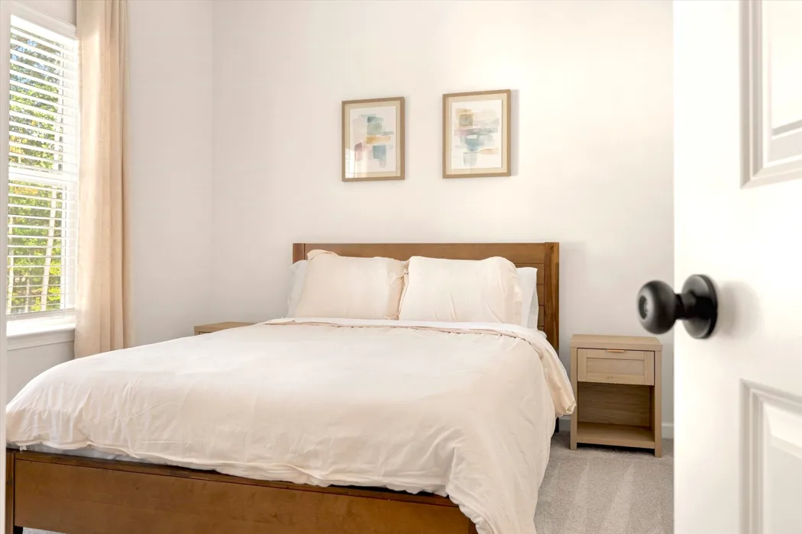
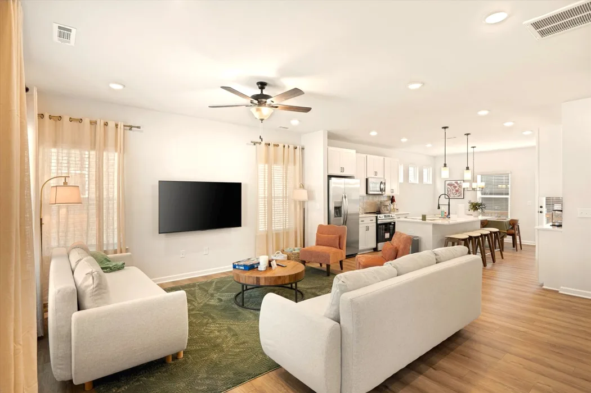
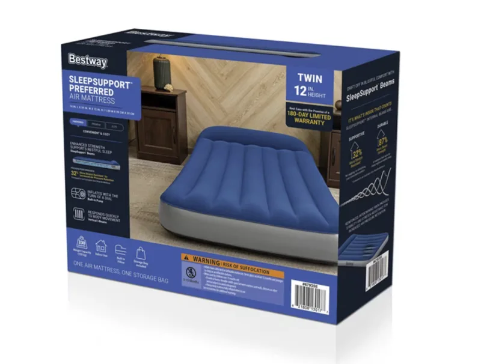

The Sweet Magnolia Raleigh
Sleeping arrangement
Our Raleigh home accommodates up to 12 registered guests.
Level 1 queen bedroom
This downstairs bedroom has a queen bed and a full bathroom on the same level. You can reach the room without climbing a full flight of stairs.

Primary king bedroom
The primary bedroom has a king bed.


Two additional queen bedrooms
Each room has one queen bed. Together, the four bedrooms sleep up to eight guests.


Living room sleeper sofas
Both living room sofas convert into beds. For help setting them up, please message us through your booking platform.

Twin air mattresses
For reservations with more than eight guests, two twin-size air mattresses are available in the linen closet. They’re an extra option if you prefer one person per sleeper sofa. Each mattress has a built-in electric pump.
